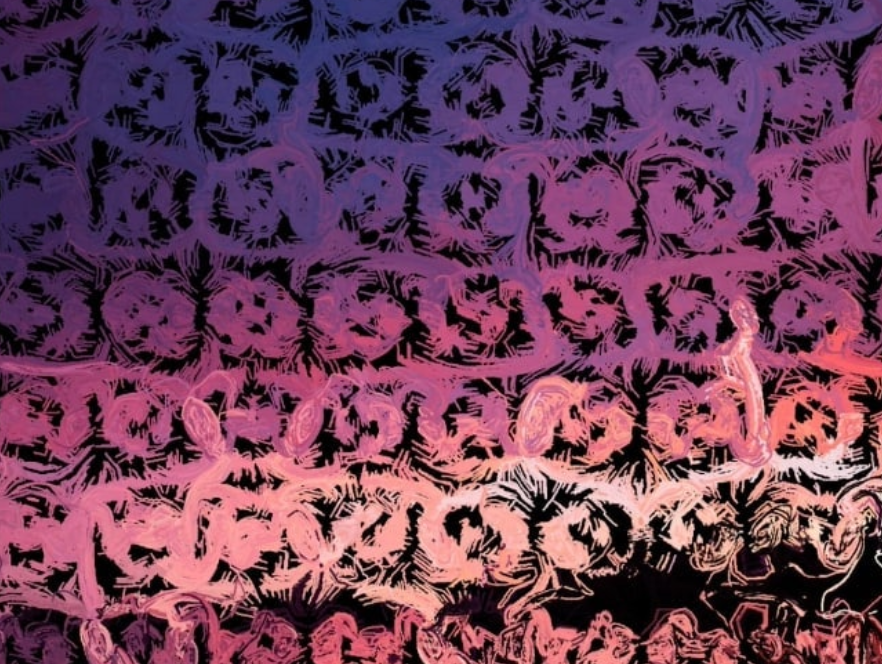
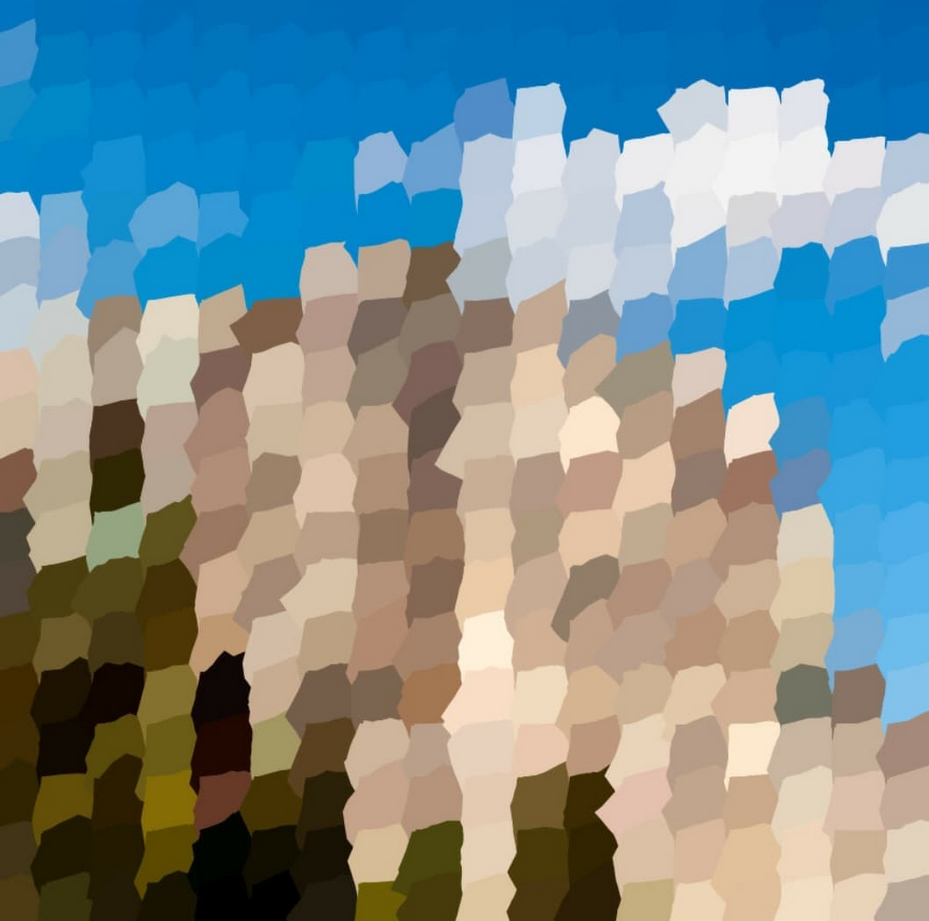
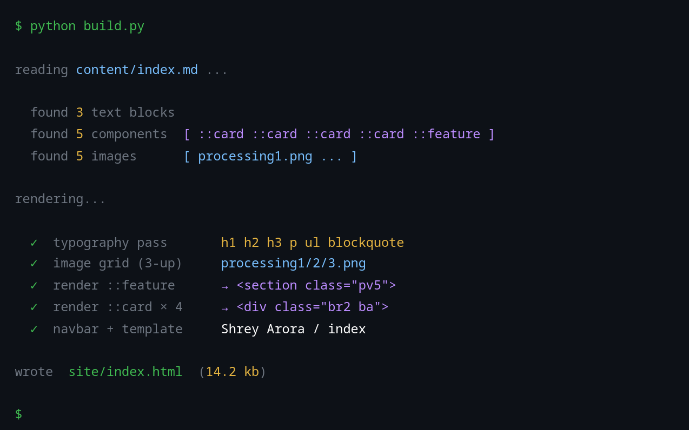
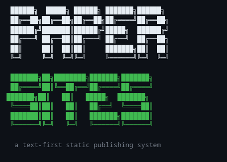
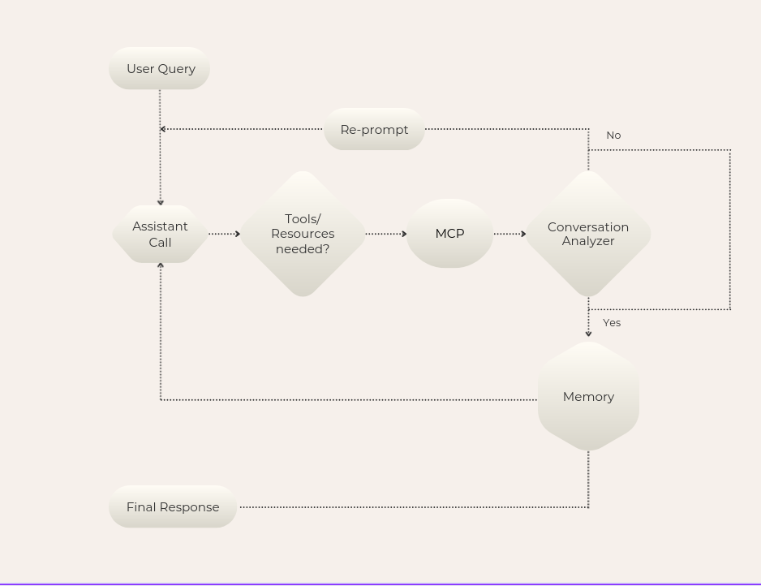
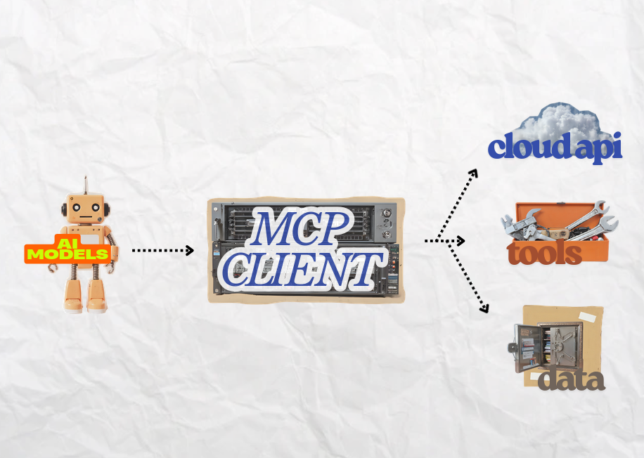

Porfolio.
Generative Art & Physics Simulations
A creative playground exploring computational art through Processing.
Projects include physics-based fluid flows, procedurally generated
patterns, algorithmic art, and real-time visualizations
powered by mathematical beauty.


Paper Sites- a Text-First Static Publishing System
A custom Markdown-based engine that transforms text into structured web
artifacts (like this website). Guided by a philosophy of minimal, user-respecting
design, it stays out of the way by reducing friction while preserving ownership.


Local Mesh- Decentralized Communication Objects
esp32 nodes programmed to form a mesh network for off-grid communication
Investigates alternative, independent, infrastructure-light systems and how information
propagates without centralized networks at Ashoka Makerspace.
Multi-Agent Orchestrator
An orchestration system that uses an LLM-based decision layer to select,
sequence, and manage tool calls. It maintains memory and system state
to enable context-aware execution across heterogeneous services.


Ledger Terminal- Personal Finance CLI
A terminal-based portfolio manager built in Go, designed as a focused interface for tracking
and interacting with financial data. Based on the idea that interfaces shape behavior,
it uses the constraints of the terminal to promote clarity, patience, and control in
financial decision-making.